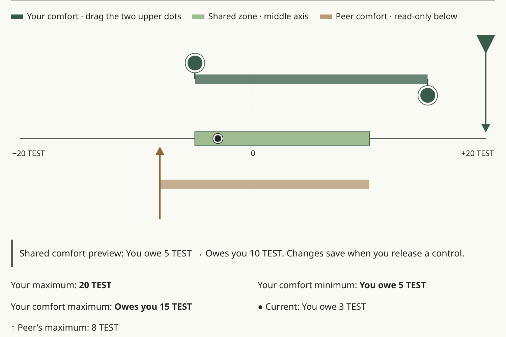
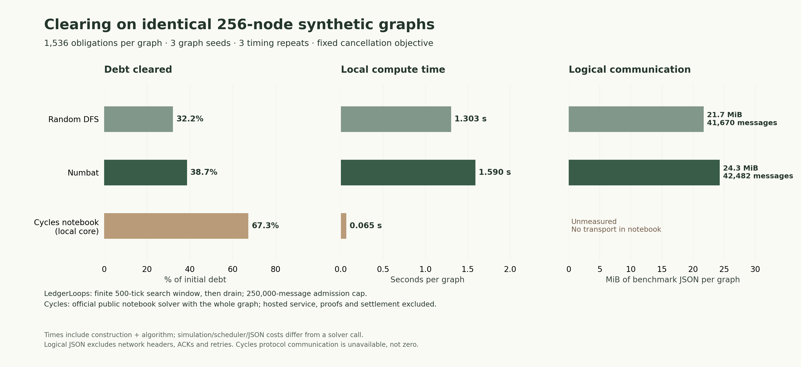

MDG2 · 25 October 2026 · Measurements: 20 October 2026
On three synthetic 256-node graphs, our node-local research strategies cleared 32.2–38.7% of debt within a fixed search budget, versus 67.3% for Cycles’ locally run public notebook solver.

Actual app, unchanged DOM/CSS, source 1e0e87d4859e470d87b430b488c64db3c08df6ae. Isolated fabricated TEST data: Alice owes Bob 3; own comfort −5…15, own grant 20; mirrored peer comfort −8…10, peer grant 8; shared zone −5…10. No credentials visible. This screenshot illustrates preferences, not settlement.

| Family | Implementation | Nodes/edges per graph | Cleared/initial units, 3 graphs | Cleared | Seconds per graph | Messages per graph | JSON MiB per graph |
|---|---|---|---|---|---|---|---|
| ring32 | LedgerLoops Random DFS | 32/32 | 160 / 4,790 | 3.34% | 0.1017 | 4,288 | 1.93 |
| ring32 | LedgerLoops Numbat | 32/32 | 192 / 4,790 | 4.01% | 0.1498 | 4,831 | 2.85 |
| ring32 | Cycles public notebook (local) | 32/32 | 352 / 4,790 | 7.35% | 0.0030 | Unmeasured | Unmeasured |
| sparse64 | LedgerLoops Random DFS | 64/256 | 16,875 / 38,824 | 43.47% | 0.2206 | 8,318 | 3.17 |
| sparse64 | LedgerLoops Numbat | 64/256 | 17,539 / 38,824 | 45.18% | 0.2688 | 8,562 | 3.54 |
| sparse64 | Cycles public notebook (local) | 64/256 | 22,562 / 38,824 | 58.11% | 0.0094 | Unmeasured | Unmeasured |
| medium256 | LedgerLoops Random DFS | 256/1,536 | 74,859 / 232,814 | 32.15% | 1.3032 | 41,670 | 21.73 |
| medium256 | LedgerLoops Numbat | 256/1,536 | 90,009 / 232,814 | 38.66% | 1.5903 | 42,482 | 24.30 |
| medium256 | Cycles public notebook (local) | 256/1,536 | 156,649 / 232,814 | 67.29% | 0.0647 | Unmeasured | Unmeasured |
Cleared percentage = summed cleared units / summed initial units over three graph seeds. Runtime = arithmetic mean of the three per-seed medians of three timing repeats. Messages and bytes = mean per graph; timing repeats never count as new graph samples.
Amount cleared counts each edge reduction once: a three-edge loop cleared by 3 removes 9 units of aggregate obligation. Units are synthetic integer weights, not money or distinct economic value.
LedgerLoops algorithms: 1e0e87d4859e470d87b430b488c64db3c08df6ae; unchanged experiments/distributed.py Random DFS and experiments/numbat.py Numbat (capacity power 4, snapshot capacity enabled, close-first disabled). Cycles: official public notebook solver, 32dc873c45041accb365e73a8ef35bee10a80f1d; NetworkX 3.5, Python 3.12.14 on INTEL(R) XEON(R) PLATINUM 8573C, Linux x86-64. Algorithms were run sequentially in the same container, with warm imports and fresh graph/state for each timing repetition. See raw artifacts for every timing and all source hashes.
Nine prospectively frozen graphs: 32-node rings (32 arcs), 64 nodes/256 arcs and 256 nodes/1,536 arcs, each using seeds 0, 1 and 2. Every graph starts with a strongly connected directed ring; larger graphs add seeded random arcs. No self loops or antiparallel pairs; each edge amount is uniformly sampled from integers 1…100. All methods receive exactly the same capacities and minimize remaining debt without new credit, preserving each node's signed net position. Cycles uses the upstream default unit-weight min-cost max-flow solver.
LedgerLoops settings: horizon 500 simulated ticks, delays 1…5 ticks, retry interval 50, max path 100, search budget 256 and a 250,000-message admission cutoff; in-flight work drains afterward. No final run hit the message cutoff. Negative ring results are retained: Random DFS seed 0 cleared nothing within the fixed window, while the Cycles reference cleared 192 units. Search is finite and contention can prevent completion.
Every completed cycle and final ledger was independently replayed; edge capacities and all node net positions reconcile. Cycles results additionally passed a no-negative-cycle certificate for minimum retained debt. All timing repeats preserved the same ledgers and communication counts. Audit summary and aggregation · CSV · LedgerLoops raw results · Cycles raw results.
Additional sources: official MTCS explanation; Cycles architecture; screenshot provenance; Cycles source provenance.